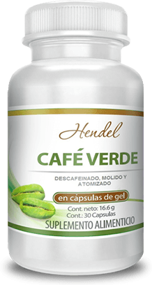

-
Disminuye el apetito
-
Ayuda a regular el metabolismo
-
No exige que modifique su hábito alimenticio ni su estilo de vida
 Un producto innovador para rebajar
El ácido clorogénico aumenta el metabolismo de los ácidos grasos en el hígado. Evita que el organismo absorba contenido graso
Al ser un potente antioxidante, la cafeína fortalece las paredes de los vasos sanguíneos y protege al organismo de radicales libres
El tanino mejora la salud digestiva y libera al organismo de toxinas
La fibra llena el estómago y genera una sensación de saciedad y regulariza de la digestión
El descubrimiento más importante en el campo de la nutrición
La combinación de la cafeína y el ácido clorogénico caracterizan a Café Verde como el quemador de grasa más potente de estos tiempos.
El producto ha sido objeto de muchos estudios clínicos llevados a cabo por laboratorios independientes cuyos resultados han confirmado su efectividad y seguridad absoluta.
Un equipo de científicos de la Centro Nacional de Salud del Perú ha llevado a cabo un estudio acerca del efecto que genera Café Verde en el cuerpo
De acuerdo con la encuesta realizada a 3193 mujeres:
Resultados máximos
Resultados mínimos
51 % del peso inicial
10 % del peso inicial
Comparación entre los resultados de Café Verde y otros productos para adelgazar tomando como base el nivel de peso perdido y la rapidez de la obtención
Café 3 meses después de terminar el proceso
Verde
Ninguno de los participantes volvió a engordar
Cómo usarlo: tómese una cápsula en la mañana y en la tarde
Los primeros resultados visibles se ven tan solo en 5 días